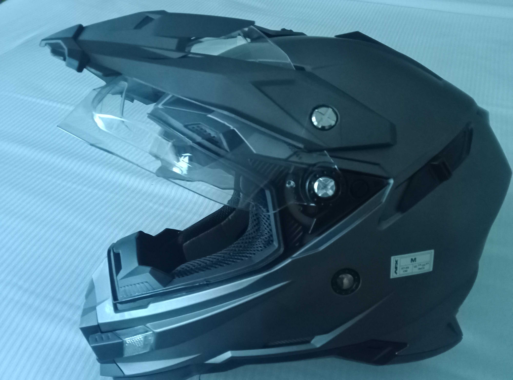

HELMET REVIEW
AFX Helmet FZ-41DS

After using the helmet for a few weeks now I would say that it is reasonably comfortable and the wind noise is no greater or less than all of my previous helemets. The visor ratchet mechanism is study and is not easily moved which I really like as it can not be moved out of the selected position except by a good push or pull on it. The visor is also reasonably thick and thus offers good protection from flying objects.
The internal drop down sun visor is okay but a little short for my liking and I would prefer it to drop down another 1 cm or so. I would also prefer it to have a little darker tint than it has but it still is good at keeping the sun at bay. The peak has a little adjustment in it and in the most forward position it is also good for shading the sun from my eyes as it gets lower in the sky.
The ventilation seems good in hot weather but I have not yet worn the helmet for longer than two hours at a time, nor in cold weather so I will update this aspect of the review when I have done so.
There are a couple of things that I do not like about the helmet and the first is the chinstrap. It is of a ratchet quick relase type and whilst this is good, the length of the adjustable strap is way too long and there is no means of securing the excess from flapping about and constantly hitting my neck when riding. This I do find very annoying, so much so that I actually cut a bit off to lessen the impact of it on my neck as it flayed about like a whip.
The other thing that I do not like about this helmet is that when using sunglasses with it, I have to remove them after about an hour of riding as the legs of the sunglasses are being pressed against my temples by inner linings of the helmet, however hopefully this problem will lessen with more use.
Overall I am impressed with the quality of the constuction and with how easlily the helmet can be dismantled for cleaning. At a cost of $250 I think that the helment was good value for money as it has a lot of features that are normally only seen in much more expensive helmets.